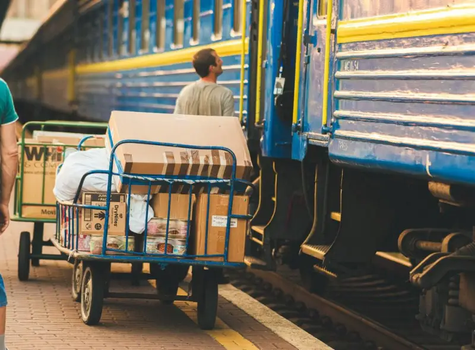
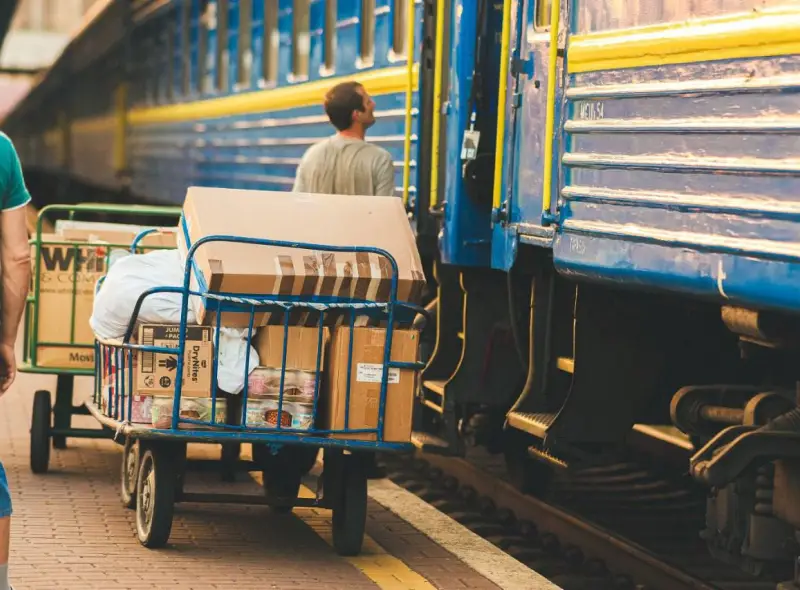

Трохи про те, хто ми такі:
З чого ми починали (і чим продовжуємо займатися зараз)
З 28 лютого ми почали займатися волонтерством на Київському з-д вокзалі.
З чисельністю більше 100 осіб, «Волонтерський Центр» надавав допомогу підрозділам і військовим частинам, ін¬шим волонтерським організаціям, а також біженцям, соціальним центрам, будинкам догляду за літніми людьми, шпиталям і лікарням, бомбосховищам та місцевому населенню.

 

Наші волонтери сприяли у забезпеченні гуманітарними вантажами для мешканців Київського, Чернігівського, Сумського, Харківського, Полтавського, Донецького, Херсонського та Миколаївського регіонів. Кожним координато¬ром і волонтером пророблена гігантська робота. Ми приймали, складували і спрямовували ве¬ликі вантажі з потягів або, навпаки, за-вантажували гуманітарну допомогу до потягів різних напрямків.
А ще майже щодня отримували та розподіляли до 400 відер вареників та всіляких смаколиків із західних областей України. Тож біженці, військові та бійці ТрО Києва та його околиць ніколи не залишались голодними. А ще приймали евакуаційні потяги, автобуси та машини, що вивозили людей з окупованих міст та гарячих точок. Всі справи кінця лютого – початку квітня 2022 й не перелічити...
То були важкі часи цілодобової безоглядної праці, але ми всі згуртувались коло однієї мети – допомогти захищати нашу Землю, вистояти та перемогти!
Весь час ми хотіли робити все більше і більше задля допомоги й тим, хто нас захищає в ці страшні часи, й тим, хто постраждав в результаті агресії та потребує підтримки – так, координатори Волонтерів Київського Вокзалу стали засновниками благодійного фонду «Заново».
«Заново» — це про Відновлення. Це місце в якому одночасно зібралися люди різних професій: інженер-архітектор, дизайнер, режисер, фармацевт, лікар, палеонтолог, кухар, електрик, вантажник, менеджер, юрист, тощо. Всіх нас, таких різних, об’єднує величезне бажання наблизити нашу перемогу та допомогти нашій країні відновлюватись! Кожного дня ми продовжуємо йти за покликом душі з однією лиш метою – допомогти країні вистояти.
На сьогодні наш фонд працює за такими напрямками (гіперпосилання): відбудова країни, гуманітарна допомога, допомога ЗСУ, плетіння сіток, виготовлення окопних свічок та творчі благодійні заходи. Кожен з цих напрямків об’єднує прекрасних людей, які безупинно працюють й вирішують неможливі задачі з пошуку необхідного для досягнення наших цілей. Всі ми віримо В НАШУ ПЕРЕМОГУ, В КРАЇНУ, в якій живемо! Віримо в те, що КВІТУЧЕ МАЙБУТНЄ УКРАЇНИ – ЦЕ РЕАЛЬНІСТЬ, адже стільки людей об’єднані цією єдиною метою, а тому РАЗОМ МИ ПЕРЕМОЖЕМО!